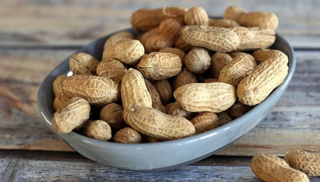

Ժողովրդական միջոցներ պրոստատիտի դեմ:
Նախկինում հիմնականում տարեց մարդիկ էին զգացել պրոստատիտ, բայց այժմ նշվում են նույնիսկ 40-ամյա հիվանդության դեպքեր:
Պրոստատիտը սեռական ֆունկցիայի վատթարացում է առաջացնում և հանգեցնում է այլ տհաճ ախտանիշների հայտնվելուն, որոնցից հիվանդը ձգտում է հնարավորինս շուտ ազատվել
Ավելի մեծ արդյունավետության հասնելու և հիվանդությունից ավելի արագ ազատվելու համար ժողովրդական միջոցները կարող են զուգակցվել բժշկի կողմից սահմանված դեղամիջոցների ընդունման հետ: Պարզեք, թե ինչպես են տղամարդիկ բուժում պրոստատիտը, ո՞ր ժողովրդական միջոցներն են առավել արդյունավետ:
Ինչպե՞ս ախտորոշել պրոստատիտը: Հիմնական ախտանիշները
Հիվանդության սկիզբը կարող է հարուցվել հիպոթերմային կամ միզուղիների վարակների կողմից:
Նաև վտանգի տակ են այն տղամարդիկ, ովքեր վարում են նստակյաց ապրելակերպ, լավ չեն ուտում, չարաշահում են ալկոհոլը, չունեն կանոնավոր սեռական հարաբերություն: Գործոնների բարդությունը հրահրում է հիվանդության ավելի վաղ սկիզբը:
Պրոստատիտի կանխարգելումը և բուժումը ժողովրդական միջոցներով պահանջում են ապրելակերպի շտկում, որպեսզի բացառեն հրահրող գործոնների բացասական ազդեցությունը:
Պրոստատիտի հիմնական տեսակները
Հիվանդությունը կարող է ունենալ այլ բնույթ, ուստի բուժումը ընտրվում է ախտորոշման համաձայն: Պրոստատիտի համար ավանդական բժշկությունը ուղղված է բացասական ախտանիշների վերացմանը և բարդությունների կանխարգելմանը, սակայն հավասարապես անհրաժեշտ է հետևել ներկա բժշկի ցուցումներին ՝ պաթոլոգիայի արմատային պատճառը վերացնելու համար:
Շատ տղամարդիկ խուճապի մեջ են վախենում նուրբ խնդիրով դիմել բժշկի և փնտրում են, թե ինչպես կարելի է բուժել ժողովրդական մեթոդներով պրոստատիտը:
Հիվանդությունը հայտնի է եղել դեռ հին ժամանակներից, ուստի իսկապես կան շատ արդյունավետ գործիքներ, որոնք կարող են էապես կրճատել կամ ամբողջությամբ վերացնել բացասական ախտանիշների դրսևորումը:
յնուամենայնիվ, դեռևս խիստ ցանկալի է այցելել մասնագետ, ամբողջական ախտորոշում անցնելու և հիվանդության զարգացման փուլը որոշելու համար:
Ավանդական բժշկություն
Պրոստատիտի բուժման համար ժողովրդական միջոցները տալիս են հակաբորբոքային ազդեցություն, կանխում են արգանդի օրգաններում արյան լճացումը, մարմնին ապահովում անհրաժեշտ վիտամիններ և հանքանյութեր:
Դրական ազդեցության հասնելու համար օգնում է բանջարեղենի և մրգերի կանոնավոր սպառումը:
Նախքան շագանակագեղձի բուժման համար ավանդական բժշկության ցանկացած միջոց օգտագործելը, ավելի լավ է խորհրդակցել բժշկի հետ, քանի որ նրանցից յուրաքանչյուրն ունի իր հակացուցումները:
-
դդմի սերմեր:
Դրանք պարունակում են մեծ քանակությամբ ցինկ - այս հետքի տարրը պատասխանատու է արական սեռական հորմոնների արտադրության համար, ուստի սննդի մեջ սերմերի կանոնավոր օգտագործումը օգնում է վերացնել հիվանդության պատճառներից մեկը: Դրանք պարունակում են նաև վիտամիններ, օրգանական թթուներ և այլ օգտակար նյութեր: -
Մաղադանոսի հյութ:
Այն ոչնչացնում է պաթոգեն միկրոֆլորան, բարելավում է արյան շրջանառությունը և օգնում բարելավել հզորությունը: Մաղադանոսը բնական աֆրոդիզակ է, դրա կանոնավոր օգտագործումը օգնում է բարելավել որակը և բարձրացնել սեռի տևողությունը: -
Մոմեր `propolis- ով:
Այս յուրահատուկ մեղվաբուծական արտադրանքը տալիս է ուժեղ հակաբորբոքային ազդեցություն, հետևաբար ՝ պրոպոլիսը տղամարդկանց մոտ պրոստատիտի արդյունավետ ժողովրդական միջոց է: Մոմերը կարելի է գնել դեղատունում կամ պատրաստել ինքնուրույն, բուժման ընթացքը 45 օր է: Կարևոր է: Propolis- ը ուժեղ ալերգեն է, այնպես որ նախ պետք է համոզվեք, որ ալերգիկ ռեակցիաներ չկան -
մեղր:
Փոքր քանակությամբ մեղրի կանոնավոր սպառումը մարմնին ապահովում է սննդանյութերի կարևոր շարք: Այն ակտիվացնում է իմունային համակարգը և օգնում է մարմնին ինքնուրույն պայքարել բորբոքման դեմ:
Գետնանուշ

Գետնանուշը ունի հակատոմիական, հակաօքսիդիչ ազդեցություն, նորմալացնում է տղամարդկանց մարմնում հորմոնալ հավասարակշռությունը:
Պրոստատիտի բուժման համար դեղամիջոցը պատրաստվում է այս բաղադրատոմսի համաձայն.
- 50 գ ընկույզը տապակվում է, մանրացված փոշու մեջ, լցվում թերմոսի մեջ:
- Այնտեղ նաև ավելացրեք 3 tbsp. լ չոր marshmallow rhizomes:
- Հումքը լցվում է կես լիտր եռացրած կաթով, 20 րոպե չպարունակեք թերմոսը:
- Այնուհետև փակեք բեռնարկղը, թողեք ներարկման 10-12 ժամ:
- Գետնանուշի կաթը վերցվում է 2 շաբաթվա ընթացքում, ամենօրյա մասը բաժանվում է 4 դոզայի:
Հյութեր
Բժիշկները հաճախ խորհուրդ են տալիս խմել թարմ քամած խմիչքներ:
- 10 օգտվողներից 9-ը խորհուրդ են տալիս
- Այս տեղեկատվությունը օգտակար կլինի ձեզ համար:
- Իմացեք ավելին մեկ կտտոցով
- Պարզ և արդյունավետ միջոց
- Բոլոր գաղտնիքներն այստեղ են: